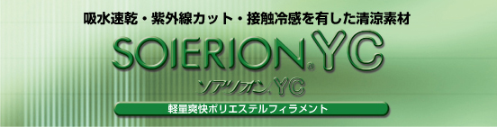
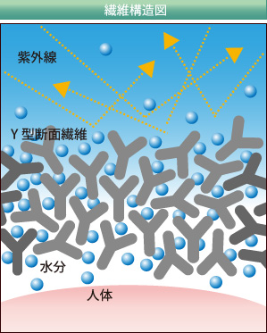
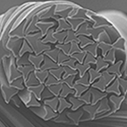
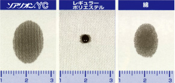
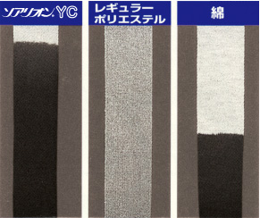
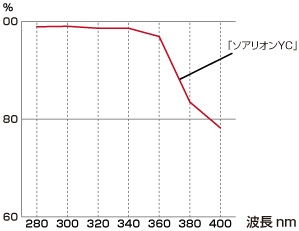

「ソアリオンYC」は、独自技術により生まれた吸水速乾性とカサ高軽量性を有したY型断面ポリエステル糸「ソアリオン®Y」に、特殊剤を混練することにより、UVカットと接触冷感性を付与した清涼素材です。
Y型断面のシャープな溝が水分を急速に吸い取り、拡散します。
紫外線の反射率、遮蔽率に優れています。UPFの等級50+。紫外線保護種別はExcellent protection。紫外線遮蔽率は平均94.2%。
生地に清涼感があります。
q-max(接触冷温感評価値)測定結果
温度差条件:⊿T=20℃、測定平均値0.211(単位:J/c㎡・sec)
Y型断面の凸起部の相互作用による多くの空隙がふくらみ感を形成し、軽量でハリ・コシ感のある生地を生みだします。
Y型断面の異形効果によりサラッとした肌ざわりと仮燃加工により更にソフトな風合いが実現します。


SEM：84/48SND
滴下30秒後

※「ソアリオンYC」は綿・レギュラーポリエステルに比較し拡散性に優れています。
5分後

※「ソアリオンYC」は綿･レギュラーポリエステルに 比較し吸水性に優れています。

※加工の条件、使用方法によっては性能に差が生じる場合がありますので、事前確認の上、ご使用ください。
ＫＢセーレン株式会社
生活資材販売部
kbs.info@kb.seiren.com